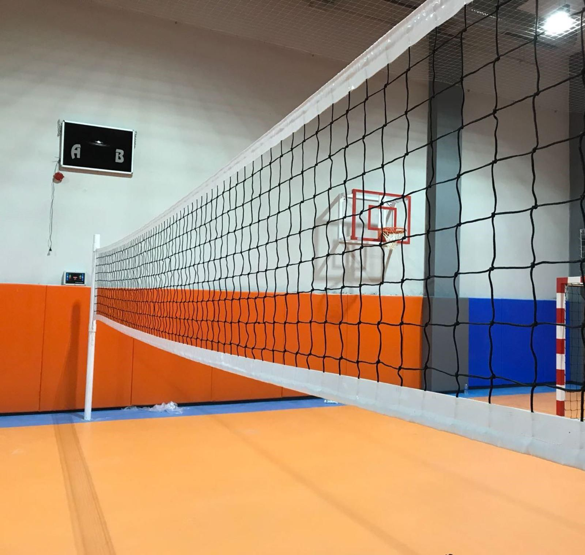
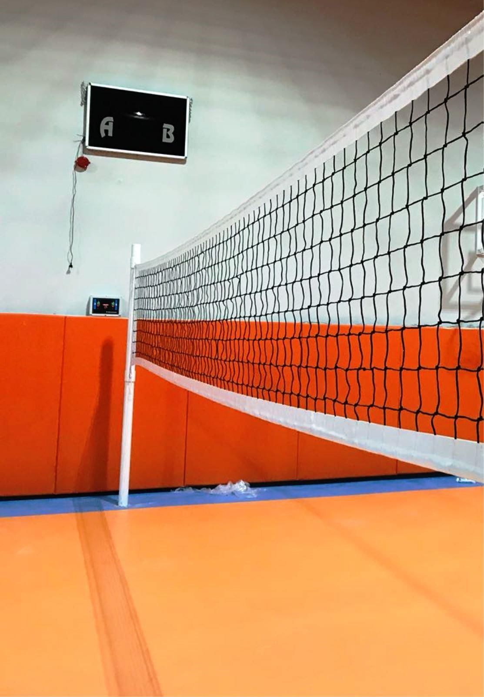
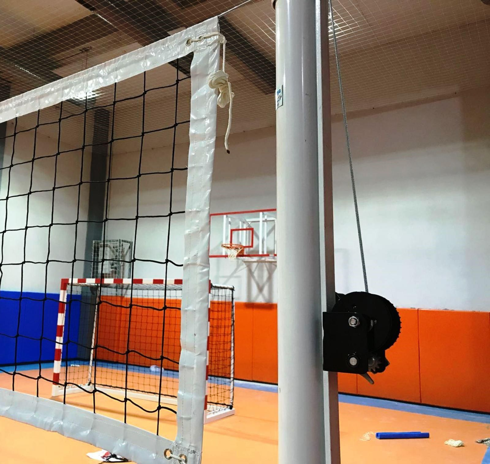

VOLEYBOL SPORU
VOLEYBOL SPORU
VOLEYBOL
Maç 5 setten oluşur. 25 puana, en az iki farkla olmak üzere ilk ulaşan seti kazanır. Beşinci set 15 puan üzerinden oynanır. En az iki farklı sonuç burada da gereklidir. Takım koçları saha kenarından takımlarına direktifler vermekte serbesttir. Her sette altı değişiklik yapma hakkı vardır. Sadece ön alanda oynayan oyuncular bloğa çıkabilir. Blok, top fileyi geçmeden yapılmalıdır. Blok sayı olarak sayılamaz.Fileden 3 metre geriye olan kısım atak alanıdır.



Oyun alanı, 18 x 9m. ölçülerinde bir dikdörtgendir ve en az 3m. genişliğinde olan bir serbest bölge ile çevrilmiştir.
Oyun sahasının üzerinde bulunan serbest oyun boşluğu, her türlü engelden arındırılmış olmalıdır. Serbest oyun boşluğu, oyun sahasının yüzeyinden ölçüldüğünde en az 7 m. yüksekliğinde olmalıdır. FIVB’nin Dünya Müsabakalarında serbest bölge yan çizgilerden ölçüldüğünde en az 5 m. ve dip çizgilerden ölçüldüğünde en az 8 m. genişliğinde olacaktır. Serbest oyun boşluğu ise oyun sahasının yüzeyinden ölçüldüğünde en az 12.5 m. yüksekliğinde olacaktır.
© Melisa ÇÖRTÜK 2020